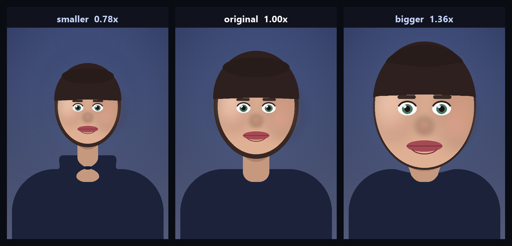

Changelog
All notable changes to HeadSize Studio are documented here. The format follows Keep a Changelog and the project uses semantic versioning.
The same history, without the pictures, lives in the root CHANGELOG.md.
[1.0.0] — 2026-10-14
First public release. Everything below is new; this entry doubles as a tour of what the app does.

Added — editing
- Automatic head detection with the YuNet DNN detector (
cv2.FaceDetectorYN), returning a face box plus five landmarks. The model (230 kB, MIT) is bundled, SHA-256 pinned, and reused for the whole session. - Elliptical radial warp that grows or shrinks a head from 0.30× to 3.00×,
with one resampling pass and a C¹-smooth falloff (
headsize/core/warp.py). - Head geometry estimation from face proportions: the ellipse is centred on the eye line, sized from the box, padded for hair, and tilted with the eyes.
- Multiple independent heads per photo, each with its own size, zone, tilt, feather and enable switch, plus use this size for every head.
- Interactive canvas: zoom under the cursor, pan, drag a head, resize the zone with four handles, tilt it with a rotation handle, double-click to add a head, right-click menu, split-compare with a draggable divider.
- Live preview on a ≤ 1400 px proxy from a background-free render path that stays under 10 ms, so dragging never stutters.
- Parametric undo/redo (80 steps) that replays from the original pixels and never degrades quality.
- Selectable render quality: fast (bilinear), balanced, high (bicubic).
Added — application
- Bilingual interface (ไทย / English) with a language switch in the sidebar.
- Dark and light themes — a single stylesheet driven by palette tokens.
- Drag-and-drop image opening, recent files, and dirty-document prompts.
- Metadata-preserving export to PNG, JPEG, WebP, TIFF and BMP, keeping EXIF, ICC profile and DPI when asked.
- Non-destructive saving: the default file name is
name-headsize.ext. - Command line interface (
python -m headsize.cli) for batch work, with--list-faces,--regionfor manual zones and--check-update. - Settings for the update repository, JPEG quality, detection threshold and the default feather.
Added — auto-update
- GitHub Releases update check on start-up and on demand, with a stable or beta channel.
- SHA-256 verification against the release's
SHA256SUMS.txtbefore anything is installed. - Self-replacing portable build: a detached helper waits for the app to exit,
renames the old build to
*.old, moves the new one in, restarts it, and rolls back if the move fails. Covered by an end-to-end test that really swaps a file.
Added — developer experience
- 132 tests (
pytest), including a headless Qt suite that builds the real window offscreen, edits through the same code paths the buttons use, grabs a screenshot and asserts the render is not flat. - Offscreen screenshot generator for the documentation
(
tools/make_doc_images.py), including a procedural portrait, so no third-party photograph is redistributed. - Markdown → HTML documentation build with a self-contained theme
(
tools/build_docs.py). - PyInstaller build script (
tools/build_exe.py) with the Qt/OpenCV excludes that keep the portable executable small. - GitHub Actions: CI on three platforms × Python 3.10–3.14, and a release
workflow that builds the executable, writes
SHA256SUMS.txtand publishes the release (which the in-app updater consumes). - AGENT.md describing the architecture, invariants and verification steps.
Known limitations
- Only whole-head scaling: no neck lengthening, no face reshaping.
- A hard profile face is often not detected; place a zone by hand.
- Head growth saturates at roughly
1 / (head radius ÷ zone radius)— about 1.4× with the default zone. Enlarge the zone for extreme caricatures. The maths and measurements are in research.md §5. - Self-update applies to packaged builds; running from source opens the release page instead.
Unreleased
Nothing yet. Candidate ideas, in no particular order:
- Area-conserving warps that remove the rim cap on head growth.
- Optional face-mesh landmarks (MediaPipe-style) for profile and tilted heads.
- Batch mode in the GUI (one setting across many photos, with a preview strip).
- A "before/after" animated export (GIF/MP4) for sharing.
- Portable settings that travel with the executable, for USB sticks.
Version history
| Version | Date | Highlights |
|---|---|---|
| 1.0.0 | 2026-10-14 | First release: detection, elliptical warp, live GUI, auto-update, docs |